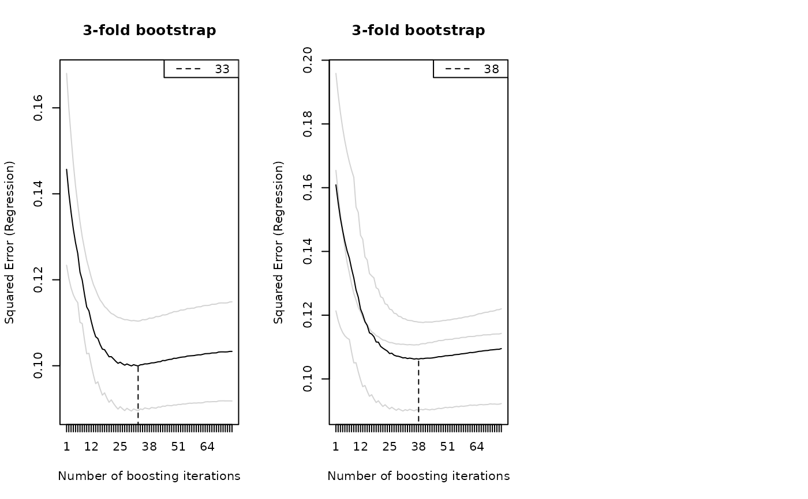

Cross-validation and bootstrapping over curves to compute the empirical risk for hyper-parameter selection.
Usage
applyFolds(
object,
folds = cv(rep(1, length(unique(object$id))), type = "bootstrap"),
grid = 1:mstop(object),
fun = NULL,
riskFun = NULL,
numInt = object$numInt,
papply = mclapply,
mc.preschedule = FALSE,
showProgress = TRUE,
compress = FALSE,
...
)
# S3 method for class 'FDboost'
cvrisk(
object,
folds = cvLong(id = object$id, weights = model.weights(object)),
grid = 1:mstop(object),
papply = mclapply,
fun = NULL,
mc.preschedule = FALSE,
...
)
cvLong(
id,
weights = rep(1, l = length(id)),
type = c("bootstrap", "kfold", "subsampling", "curves"),
B = ifelse(type == "kfold", 10, 25),
prob = 0.5,
strata = NULL
)
cvMa(
ydim,
weights = rep(1, l = ydim[1] * ydim[2]),
type = c("bootstrap", "kfold", "subsampling", "curves"),
B = ifelse(type == "kfold", 10, 25),
prob = 0.5,
strata = NULL,
...
)Arguments
- object
fitted FDboost-object
- folds
a weight matrix with number of rows equal to the number of observed trajectories.
- grid
the grid over which the optimal number of boosting iterations (mstop) is searched.
- fun
if
funisNULL, the out-of-bag risk is returned.fun, as a function ofobject, may extract any other characteristic of the cross-validated models. These are returned as is.- riskFun
only exists in
applyFolds; allows to compute other risk functions than the risk of the family that was specified in object. Must be specified as function of arguments(y, f, w = 1), whereyis the observed response,fis the prediction from the model andwis the weight. The risk function must return a scalar numeric value for vector valued input.- numInt
only exists in
applyFolds; the scheme for numerical integration, seenumIntinFDboost.- papply
(parallel) apply function, defaults to
mclapplyfrom R packageparallel, seecvriskfor details.- mc.preschedule
Defaults to
FALSE. Preschedule tasks if they are parallelized usingmclapply. For details seemclapply.- showProgress
logical, defaults to
TRUE.- compress
logical, defaults to
FALSE. Only used to force a meaningful behaviour ofapplyFoldswith hmatrix objects when using nested resampling.- ...
further arguments passed to the (parallel) apply function.
- id
the id-vector as integers 1, 2, ... specifying which observations belong to the same curve, deprecated in
cvMa().- weights
a numeric vector of (integration) weights, defaults to 1.
- type
character argument for specifying the cross-validation method. Currently (stratified) bootstrap, k-fold cross-validation, subsampling and leaving-one-curve-out cross validation (i.e. jack knife on curves) are implemented.
- B
number of folds, per default 25 for
bootstrapandsubsamplingand 10 forkfold.- prob
percentage of observations to be included in the learning samples for subsampling.
- strata
a factor of the same length as
weightsfor stratification.- ydim
dimensions of response-matrix
Value
cvMa and cvLong return a matrix of sampling weights to be used in cvrisk.
The functions applyFolds and cvrisk.FDboost return a cvrisk-object,
which is a matrix of the computed out-of-bag risk. The matrix has the folds in rows and the
number of boosting iteratins in columns. Furhtermore, the matrix has attributes including:
- risk
name of the applied risk function
- call
model call of the model object
- mstop
gird of stopping iterations that is used
- type
name for the type of folds
Details
The number of boosting iterations is an important hyper-parameter of boosting.
It be chosen using the functions applyFolds or cvrisk.FDboost. Those functions
compute honest, i.e., out-of-bag, estimates of the empirical risk for different
numbers of boosting iterations.
The weights (zero weights correspond to test cases) are defined via the folds matrix,
see cvrisk in package mboost.
In case of functional response, we recommend to use applyFolds.
It recomputes the model in each fold using FDboost. Thus, all parameters are recomputed,
including the smooth offset (if present) and the identifiability constraints (if present, only
relevant for bolsc, brandomc and bbsc).
Note, that the function applyFolds expects folds that give weights
per curve without considering integration weights.
The function cvrisk.FDboost is a wrapper for cvrisk in package mboost.
It overrides the default for the folds, so that the folds are sampled on the level of curves
(not on the level of single observations, which does not make sense for functional response).
Note that the smooth offset and the computation of the identifiability constraints
are not part of the refitting if cvrisk is used.
Per default the integration weights of the model fit are used to compute the prediction errors
(as the integration weights are part of the default folds).
Note that in cvrisk the weights are rescaled to sum up to one.
The functions cvMa and cvLong can be used to build an appropriate
weight matrix for functional response to be used with cvrisk as sampling
is done on the level of curves. The probability for each
curve to enter a fold is equal over all curves.
The function cvMa takes the dimensions of the response matrix as input argument and thus
can only be used for regularly observed response.
The function cvLong takes the id variable and the weights as arguments and thus can be used
for responses in long format that are potentially observed irregularly.
If strata is defined
sampling is performed in each stratum separately thus preserving
the distribution of the strata variable in each fold.
Note
Use argument mc.cores = 1L to set the numbers of cores that is used in
parallel computation. On Windows only 1 core is possible, mc.cores = 1, which is the default.
See also
cvrisk to perform cross-validation with scalar response.
Examples
Ytest <- matrix(rnorm(15), ncol = 3) # 5 trajectories, each with 3 observations
Ylong <- as.vector(Ytest)
## 4-folds for bootstrap for the response in long format without integration weights
cvMa(ydim = c(5,3), type = "bootstrap", B = 4)
#> [,1] [,2] [,3] [,4]
#> [1,] 1 1 1 0
#> [2,] 3 3 1 1
#> [3,] 0 1 1 2
#> [4,] 0 0 2 2
#> [5,] 1 0 0 0
#> [6,] 1 1 1 0
#> [7,] 3 3 1 1
#> [8,] 0 1 1 2
#> [9,] 0 0 2 2
#> [10,] 1 0 0 0
#> [11,] 1 1 1 0
#> [12,] 3 3 1 1
#> [13,] 0 1 1 2
#> [14,] 0 0 2 2
#> [15,] 1 0 0 0
#> attr(,"type")
#> [1] "4-fold bootstrap"
cvLong(id = rep(1:5, times = 3), type = "bootstrap", B = 4)
#> [,1] [,2] [,3] [,4]
#> [1,] 2 2 1 1
#> [2,] 1 1 3 0
#> [3,] 0 2 0 1
#> [4,] 1 0 0 1
#> [5,] 1 0 1 2
#> [6,] 2 2 1 1
#> [7,] 1 1 3 0
#> [8,] 0 2 0 1
#> [9,] 1 0 0 1
#> [10,] 1 0 1 2
#> [11,] 2 2 1 1
#> [12,] 1 1 3 0
#> [13,] 0 2 0 1
#> [14,] 1 0 0 1
#> [15,] 1 0 1 2
#> attr(,"type")
#> [1] "4-fold bootstrap"
if(require(fda)){
## load the data
data("CanadianWeather", package = "fda")
## use data on a daily basis
canada <- with(CanadianWeather,
list(temp = t(dailyAv[ , , "Temperature.C"]),
l10precip = t(dailyAv[ , , "log10precip"]),
l10precip_mean = log(colMeans(dailyAv[ , , "Precipitation.mm"]), base = 10),
lat = coordinates[ , "N.latitude"],
lon = coordinates[ , "W.longitude"],
region = factor(region),
place = factor(place),
day = 1:365, ## corresponds to t: evaluation points of the fun. response
day_s = 1:365)) ## corresponds to s: evaluation points of the fun. covariate
## center temperature curves per day
canada$tempRaw <- canada$temp
canada$temp <- scale(canada$temp, scale = FALSE)
rownames(canada$temp) <- NULL ## delete row-names
## fit the model
mod <- FDboost(l10precip ~ 1 + bolsc(region, df = 4) +
bsignal(temp, s = day_s, cyclic = TRUE, boundary.knots = c(0.5, 365.5)),
timeformula = ~ bbs(day, cyclic = TRUE, boundary.knots = c(0.5, 365.5)),
data = canada)
mod <- mod[75]
# \donttest{
#### create folds for 3-fold bootstrap: one weight for each curve
set.seed(123)
folds_bs <- cv(weights = rep(1, mod$ydim[1]), type = "bootstrap", B = 3)
## compute out-of-bag risk on the 3 folds for 1 to 75 boosting iterations
cvr <- applyFolds(mod, folds = folds_bs, grid = 1:75)
## weights per observation point
folds_bs_long <- folds_bs[rep(seq_len(nrow(folds_bs)), times = mod$ydim[2]), ]
attr(folds_bs_long, "type") <- "3-fold bootstrap"
## compute out-of-bag risk on the 3 folds for 1 to 75 boosting iterations
cvr3 <- cvrisk(mod, folds = folds_bs_long, grid = 1:75)
# }
# \donttest{
## plot the out-of-bag risk
oldpar <- par(mfrow = c(1,3))
plot(cvr); legend("topright", lty=2, paste(mstop(cvr)))
plot(cvr3); legend("topright", lty=2, paste(mstop(cvr3)))
par(oldpar)
# }
}
#> Use a smooth offset.
#> Warning: 1 fold(s) encountered an error. Results are based on 2 folds only.
#> Original error message(s):
#> Error in fitfct(weights = weights, oobweights = oobweights) :
#> The factor variable 'region' has unobserved levels in the training data. Make sure that training data in each fold contains all factor levels.
#> The smooth offset is fixed over all folds.
#> For bolsc, the transformation matrix Z is fixed over all folds.
